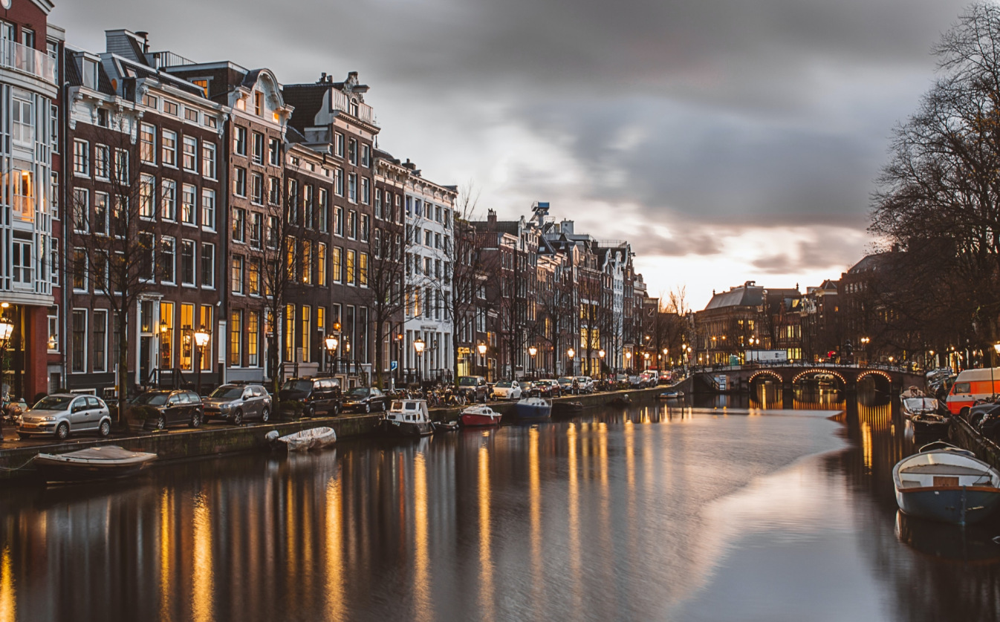

Rome
Rome is the capital city of Italy. It is also the capital of the Lazio region, the centre of the Metropolitan City of Rome, and a special comune named Comune di Roma Capitale.
Let's Visit 👉🏻

Let's Visit 👉🏻
Amsterdam
Amsterdam is the Netherlands’ capital, known for its artistic heritage, elaborate canal system and narrow houses with gabled facades, legacies of the city’s 17th-century Golden Age.
Let's Visit 👉🏻

Paris
Paris, France's capital, is a major European city and a global center for art, fashion, gastronomy and culture. Its 19th-century cityscape is crisscrossed by wide boulevards and the River Seine.
Let's Visit 👉🏻